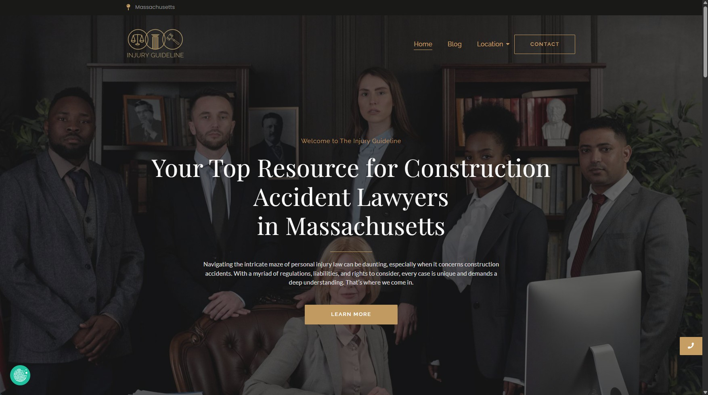
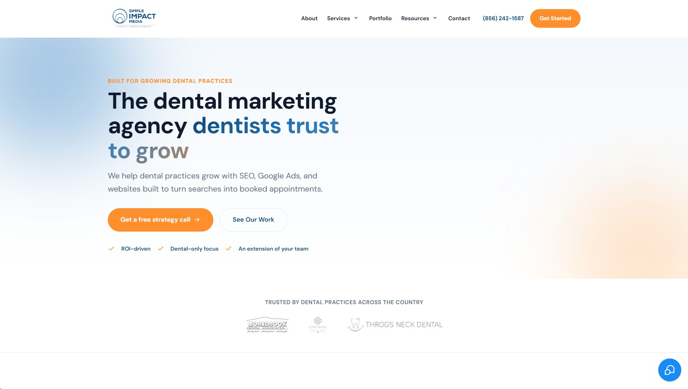
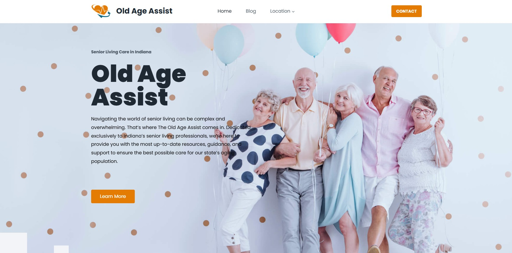

01
Injury Guideline
Built pages, layouts, and responsive design using Elementor, with clear navigation and a structure that supports search visibility.
Visit injuryguideline.com →FRONTEND WEB DEVELOPER · SEO SPECIALIST · CONTENT WRITER
I combine hands-on web development, WordPress, SEO, and content experience to create practical digital experiences for businesses and online projects.

Web development · WordPress · SEO · Content
01 / ABOUT
I'm a dedicated digital professional with extensive hands-on experience in web development, SEO, content creation, and online marketing.
I've worked on WordPress websites, landing pages, website maintenance, technical and on-page SEO, local SEO, content optimization, and digital marketing workflows. My experience has also grown into team management, where I help coordinate development, SEO, content, and project delivery.
I enjoy building websites that are clean and useful for people while also being structured to support search visibility and long-term growth.
02 / SELECTED WORK
Live websites I've built, redesigned, and restored using Elementor and WordPress.

Built pages, layouts, and responsive design using Elementor, with clear navigation and a structure that supports search visibility.
Visit injuryguideline.com →
Redesigned the content and layout starting from a Figma mock-up, then improved the user experience by building it out in Elementor.
Visit simpleimpactmedia.com →
Restored the website using Elementor, bringing the site back to a working, presentable state.
Visit oldageassist.com →03 / WHAT I DO
Responsive websites, landing pages, WordPress builds, CMS customization, maintenance, HTML, CSS, JavaScript, and PHP.
On-page, technical, local SEO, metadata, internal linking, citations, Google Business Profile optimization, and content optimization.
Website content, blog writing, SEO content, editing, optimization, and social media content creation.
Social media support, advertising, online listings, project coordination, and digital marketing workflows.
04 / EXPERIENCE
A progression from online operations into web development, SEO, content, and team management.
SEO BROTHERS
Oversaw and handled web development, domain and website management, SEO implementation, content writing, team coordination, and project delivery.
PROSPERUS INTERNET MARKETING, INC.
Performed SEO-related work including local listings, citations, social media marketing, data entry, and content creation.
EAGLES WEB SOLUTION
Supported online marketing tasks including data entry, blog commenting, local listings, citation building, social media management, and content creation.
05 / TOOLKIT
06 / CONTACT
I'm open to web development, WordPress, SEO, content, and digital marketing opportunities.
Binangonan, Rizal, Philippines